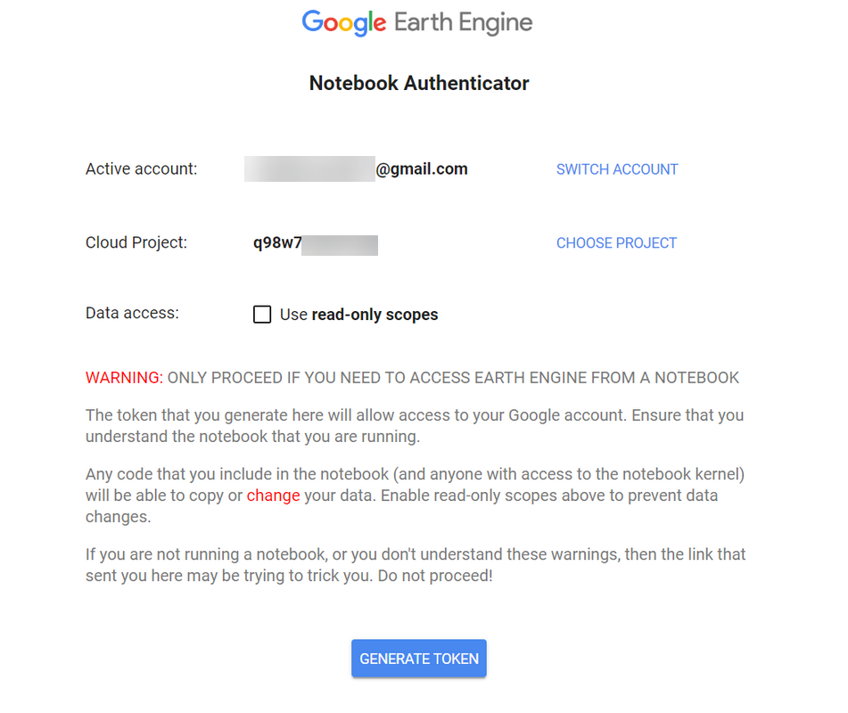

Introduction#
Welcome to MATILDA-Online, the Python-based workflow for Modeling Water Resources in Glacierized Catchments! This book describes the comprehensive toolkit in detail and guides you step-by-step from data acquisition to analysis of climate change impacts on the selected catchment. Designed with flexibility and accessibility in mind, MATILDA integrates robust scientific models, public data sources, and user-friendly tools to make sophisticated glacio-hydrological modeling accessible to researchers, practitioners, and students alike.
The workflow is divided into a series of interactive notebooks, each focused on a specific component of the modeling process. These notebooks streamline complex tasks such as catchment delineation, data processing, model calibration, and climate scenario analysis, ensuring clarity and reproducibility at each step:
Notebook 1 - Catchment Delineation: Delineate your catchment and retrieve static geospatial data, including digital elevation models, glacier outlines, and ice thickness distributions.
Notebook 2 - Forcing Data: Acquire and process ERA5-Land reanalysis data, preparing inputs for glacio-hydrological model calibration.
Notebook 3 - CMIP6 Climate Data: Download and process historical and future climate data from the Coupled Model Intercomparison Project Phase 6 (CMIP6) for two emission scenarios.
Notebook 4 - MATILDA Model: Run the MATILDA model with default parameters and calibrate it based on mutiple objectives.
Notebook 5 - Scenario Simulations: Apply your calibrated parameter set to run the model over all CMIP6 ensemble members for robust scenario-based analysis.
Notebook 6 - Results Analysis: Visualize model output in interactive plots, highlighting trends and uncertainties across ensemble simulations.
Notebook 7 - Climate Change Indicators: Extract key meteorological and hydrological indicators of the impact of climate change on your watershed.
The workflow below is demonstrated using a sample site in the Tian Shan Mountains of Kyrgyzstan. To try the toolkit for yourself, simply click on the rocket icon in the toolbar above to launch an online environment hosted by mybinder.org. There you can run any notebook with the sample data or upload your own and edit the config file accordingly. Note that while most of the workflow will work fine in the binder, calibrating the model is computationally intensive and will be slow to run on a single CPU. For a comprehensive calibration that takes full advantage of the spotpy library, we recommend downloading the notebooks and running them on a local machine with multi-core processing capabilities. Additional options to reduce calibration time are described in Notebook 4.
Have fun exploring and happy modeling!

Signing up for Google Earth Engine (GEE)#
Much of the public data acquisition will be done using the Google Earth Engine Python API. This not only allows us to access an unique collection of public datasets but to “outsource” most of their preprocessing to Google servers. Therefore, you require an Earth Engine Account to use this service. If you don’t have one, sign up as follows.
To start visit the Earth Engine website and click on Get Started in the top right corner.

Log into your Google account or create one using any email adress.

Once you signed in you can register your first project. Click on Register a Noncommercial or Commercial Cloud project.

Next, choose how you want to use Earth Engine. You may select Unpaid usage and Academia & Research.

Now you have the option to join an existing Google Cloud Project or create a new one. For the latter click on Create a new Google Cloud Project, and choose your organization, create a project ID and optionally choose a project name. Click on CONTINUE TO SUMMARY when finished.

Before your project is registered you might be asked to accept the Terms of Services if you haven’t done so already. Click on Cloud Terms of Services. You will be redirected to your Google account where you can accept the terms.

Finally, confirm your Cloud Project information by clicking on CONFIRM AND CONTINUE.

The first cell of every notebook using GEE will check your authentication status. If it is the first time the GEE API is initialized, a hyperlink will be generated that brings you to a GEE log in page. There you need to …
Authorize access for Google Earth Engine#
Choose your account and project and click on GENERATE TOKEN.

If not done already, you will need to sign in to your Google Account. You’ll get a security notification for unverified apps. Click continue.

Next, grant your Earth Engine Notebook Client access to your account and click Continue.

Finally, copy the authorisation code …

… and paste it into the designated field in the notebook.

You should get a message saying Successfully saved authorization token. You are now ready to start with the MATILDA workflow. Before we dive into data handling, let’s have a look at …
The config.ini file#
This file contains a list of essential information for the workflow and allows customization. If you want to try MATILDA-Online with the sample dataset, you don’t need to edit the file. If you want to use your own data, replace the file with the discharge observation in the input/ folder and adapt the reference coordinates accordingly.
The first section
[FILE_SETTINGS]allows you to edit paths and file names for in- and outputs. This can especially be useful if you model multiple catchments in the same copy of the repository.In the
[CONFIG]section you can …… specify your reference coordinates (usually your gauging station location) and select the calibration period. The latter should cover your observation period plus a few years before as a spin-off.
… change the digital elevation model used.
… choose whether to create scenario-based projections or just model the past.
… disable the generation of live maps.
… configure the style of output figures. More information about the available styles can be found in the SciencePlots manual.
… choose between a faster (
.pickle) and a more compact (.parquet) format for intermediate files.… set the number of cores available for computation. If you are in a binder, leave this at 1.
3. The last section [MEDIA_SERVER] holds credentials for the file access on a file repository of our university and should not be edited if you are not a university member and know what you’re doing. The credentials only grant read access to glacier-related public data and are not of value to you.
With the config.ini set up, you may now start with Notebook 1.